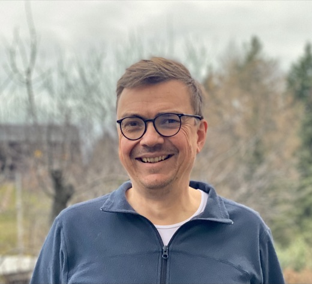

Fakultät für Mathematik - TU Dresden
Andreas Thom
I am a mathematician at the Fakultät für Mathematik, TU Dresden. My research is about geometric group theory, real algebraic geometry, algebraic topology, ergodic theory, and operator algebras.

Contact
Fakultät für Mathematik, TU Dresden
Zellescher Weg 12-14, 01069 Dresden
Willersbau, B 209
andreas.thom@tu-dresden.de - +49 351 463-43074